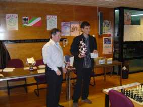
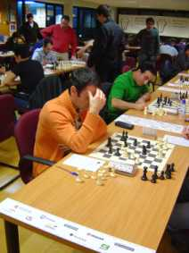
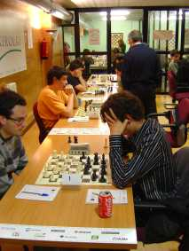

Agustin de Leitza Xake Elkartea |
| » hasiera » elkarteko bazkideak » taldekako txapelketa » azken txapelketak » loturak |
Bakarka txapelketa absolutoaGrosen hasi da bakarka txapelketa absolutoa, eta azken aldiz jokatuko da Gros Xake Taldeak daukan egoitzan, izan ere, datorren urtean mugituko dira Manteo polikiroldegitik Amarara. Gure taldekide Javier Corralek eta Alfredo Guerrerok jokatzen dute txapelketa hau, eta ia beti bezala faboritoa Iñigo Argadoña da.Partidaren bisorea Txapelketaren laburpena (pdf) Zazpigarren txanda 08-12-06Bukatu da gorengoen eta lehen mailako txapelketa, eta esan dezakegu “azkenean” gure jokalarientzat oso ona ez delako izan. Javik irabazi du azkena 15 urteko promesa baten aurka, baina kostatu zaio eta momentu batzuetan porrotan ere pentsatu dugu Javiren denbora estutasunak ikusita, nahiz eta azkena irabazi Elo puntu asko galdu ditu Javik, ia 30. Beraz txapelketa txarra Javirentzat, ondo hasi bazen ere. Bere alde esan dezakegu lantegian arazo asko izan dituela eta ezin izan du behar bezala kontzentratu mahaian, hala ere Javiren jokoa txapelketa honetan ERE bat merezi du, batez ere denbora estutasun horiek. Alfredok, bere aldetik, ez digu zapore ona ere utzi, haatik bere inkonparetzentzia azkenaurreko txandan (saiatu zen partida aurreratzen baina ezin zuen) zerikusi asko izan sentsazio horretan. Hala ere, ez du jokatu bere mailan, batez ere hasiera oso arriskutsuak jokatzen.  Seigarren txanda 08-11-29Oso jardunaldi txarra gure jokalarientzat. Javik galdu du Alvarado-ren kontra, Fomento taldeko jokalaria, eta Alfredok galdu du ez delako aurkerztu, ez dakigu zergatik. Txapelketako sorpresa konfirmatzen da, Jon Aranak jarraitzen du lidergoan Edu Sanzi irabazi eta gero.Bostgarren txanda 08-11-22Gaur jokatu den jardunaldia esan daiteke txarra izan dela gure jokalarientzat. Javik galdu egin du berriro Jon Aranaren kontra, hasieratik ondo irten da baina ez da ausartu sakrifizio bat egitera (agian bere konfidantza ez dago oso altua azken emaitzengatik) eta honezkero partidak ez du istorio handia esan eta laster Aranak mate egin dio Javiri. Alfredok bere partetik taulak eskuratu ditu Urretavizcayaren kontra. Baina ez dugu emaitza hau oso ondo ulertzen, publikatu den partidan, azken posizioan, Alfredok abantaila deziziboa baituelako. Espero dezagun hurrengo txandan emaitzak hobestea.Laugarren txanda 08-11-15Berriro egun txuri-beltz izan dute gure jokalariek. Berri onekin hasiko gara, eta esan behar dugu Guerrerok bigarren garaipena lortu duela, eta oso erraz gainera. Aurkariak pieza txuriekin Rossolimo bariantearekin erantzun dio Alfredok jokatu duen siziliana defentsari, baina 16. mugimenduan lortu du b5-eko alfila galtzea, eta ondorioz laga egin du. Bestaldetik, Javik jokatu du Luis Olaizolaren aurka, txapelketarako faborito bat, eta kanpotik ikusita ez du bere mailan jokatu. Irteera oso arraro bat jokatu du Javik, bere ohiko d4 ordez e4 jokatu du, eta laster arazoekin topatu da, eta hortik maldan behera joan da eta gure ustez oso erraz galdu du.Hirugarren txanda 08-11-08Ezin dugu esan jardunaldi txarra izan dela gure jokalarientzat. Alde batetik Javik taulak sinatu ditu, aurkari ahulago batekin, baina aurkariak pieza txuriekin, oso solido jokatu du partida osoa, akats larriak egin gabe eta beraz emaitza ulergarria da. Alfredok, besta partetik, bere lehen garaipena lortu du. Gero aitortu duenez, ez du partida on bat jokatu baina aurkariak egin dituen akats larriak aprobetxatu ditu lehendabizi kalitate bat irabazteko eta gero pieza bat irabazteko.
Javik jakatzen hirugarren txandan.  Joko aretoa hirugarren txandan. Bigarren txanda 08-11-01Bigarren aldiz sorte desberdina eduki dute gure jokalariek. Alde batetik Javik irabazi du, bestaldetik Alfredok galdu du berriro. Javik jokatu du guretzat ezezaguna den jokalari batekin, hasiera jokatu du anbiziorik gabe eta erdi jokoan zertxobati txarrago zegoen, baina gero partidaren narabidea berreskuratu du eta peoi bat irabazi gu, eta honezkero partida. Alfredoren partida guztiz kontrakoa izan da, Alfredok jokatu du txapelketaren errebelzazioarekin, Jon Arana, eta Alfredok beltzekin erregeko india Samisch bariantea jokatu du, baina ez du ondo maneiatu eta txarrago geratu du hasiera eta gero, kalitate bat sakrifikatu du baina ez du lortu konpenzaziorik eta galdu du.Lehen txanda 08-10-25Gure jokalariek hasi dute txapelketa suerte ezberdinekin. Alfredok galdu du Iñigo Martinen aurka, Gros taldeko jokalari gazte eta idartsua. Bitartean, Javik irabazi du espero den baino errazago bere patida Jon Kuenderen aurka, honek bere zaldun bat a8an utzi eta gero. Bestaldetik, faborito nagusiak, Iñigo Argandoña, galdu du Eibarko Jon Aranaren kontra, lehen txandako izan den sorpresa nagusian. |